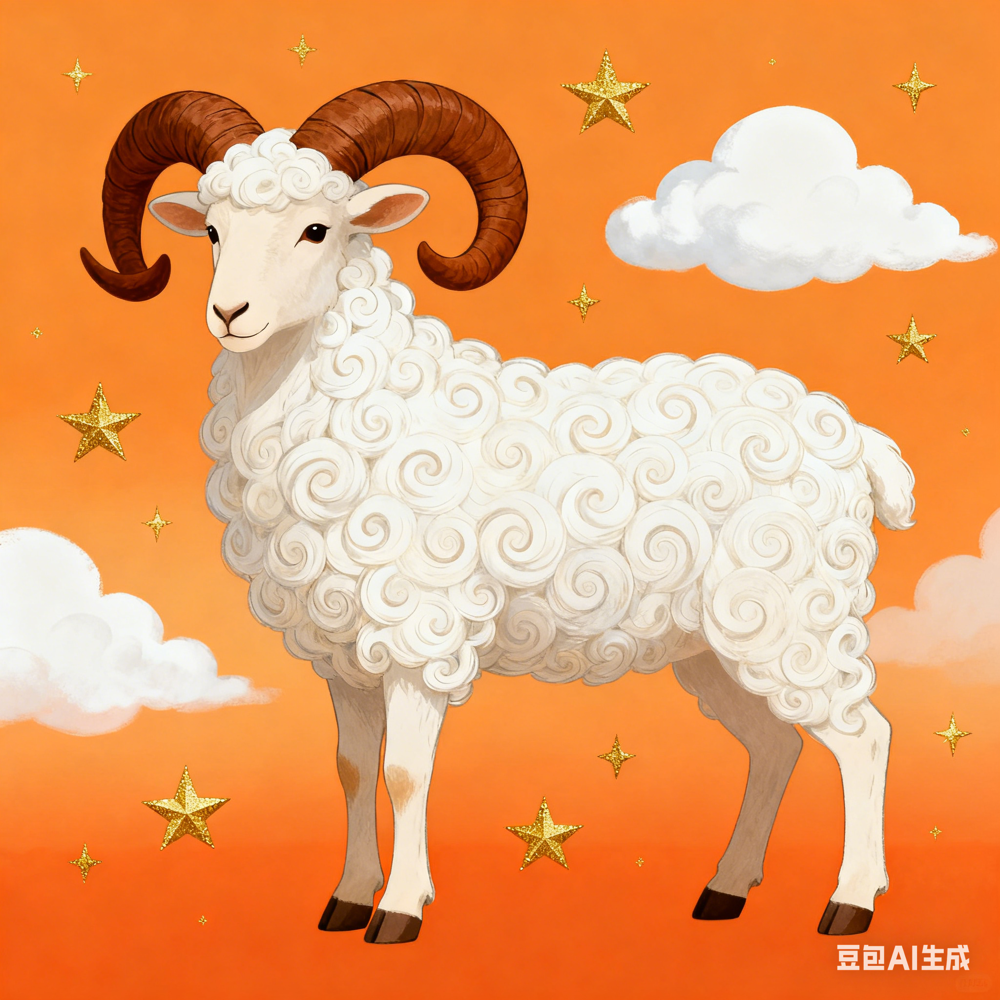

| 星座名稱 |
星座日期 |
星座圖片 |
星座介紹 |
| 白羊座 |
3月21日 - 4月19日 |
 |
白羊座是黃道十二宮的第一宮，守護星為火星。性格熱情、勇敢、衝動，充滿活力，喜歡挑戰，做事果斷，有領導才能，但有時難免魯莽。 |
| 金牛座 |
4月20日 - 5月20日 |
 |
金牛座是黃道十二宮的第二宮，守護星為金星。性格穩重、務實、執著，為人可靠，喜歡舒適的生活，對美食和藝術有獨特品味，但有時過於固執。 |
| 雙子座 |
5月21日 - 6月21日 |
 |
雙子座是黃道十二宮的第三宮，守護星為水星。性格聰明、靈活、善於交際，思維敏捷，興趣廣泛，適應能力強，但有時缺乏耐心，容易三分鐘熱度。 |
| 巨蟹座 |
6月22日 - 7月22日 |
 |
巨蟹座是黃道十二宮的第四宮，守護星為月亮。性格溫柔、敏感、重感情，非常重視家庭，有強烈的保護欲，但有時容易多愁善感，缺乏安全感。 |
| 獅子座 |
7月23日 - 8月22日 |
 |
獅子座是黃道十二宮的第五宮，守護星為太陽。性格自信、豪爽、熱情，有王者之風，喜歡成為關注的焦點，慷慨大方，但有時過於自負，愛面子。 |
| 處女座 |
8月23日 - 9月22日 |
 |
處女座是黃道十二宮的第六宮，守護星為水星。性格細心、謹慎、追求完美，做事認真負責，有很強的分析能力，但有時過於挑剔，容易鑽牛角尖。 |
| 天秤座 |
9月23日 - 10月23日 |
 |
天秤座是黃道十二宮的第七宮，守護星為金星。性格平和、友善、善於交際，追求公平與和諧，有很強的協調能力，但有時容易猶豫不決，缺乏主見。 |
| 天蠍座 |
10月24日 - 11月22日 |
 |
天蠍座是黃道十二宮的第八宮，守護星為冥王星。性格神秘、執著、有韌性，意志力強，洞察力敏銳，對感情專一，但有時容易記仇，占有欲強。 |
| 射手座 |
11月23日 - 12月21日 |
 |
射手座是黃道十二宮的第九宮，守護星為木星。性格樂觀、開朗、熱愛自由，喜歡冒險和探索，思維開闊，為人直率，但有時容易粗心大意，缺乏責任感。 |
| 摩羯座 |
12月22日 - 1月19日 |
 |
摩羯座是黃道十二宮的第十宮，守護星為土星。性格沉穩、內斂、有耐心，目標明確，腳踏實地，非常勤奮，但有時過於保守，缺乏樂趣。 |
| 水瓶座 |
1月20日 - 2月18日 |
 |
水瓶座是黃道十二宮的第十一宮，守護星為天王星。性格獨特、創新、思想開放，喜歡與眾不同，重視友誼，有很強的人道主義精神，但有時過於冷漠，難以捉摸。 |
| 雙魚座 |
2月19日 - 3月20日 |
 |
雙魚座是黃道十二宮的第十二宮，守護星為海王星。性格善良、溫柔、富有想象力，感性浪漫，有很強的同情心，但有時容易逃避現實，過於軟弱。 |